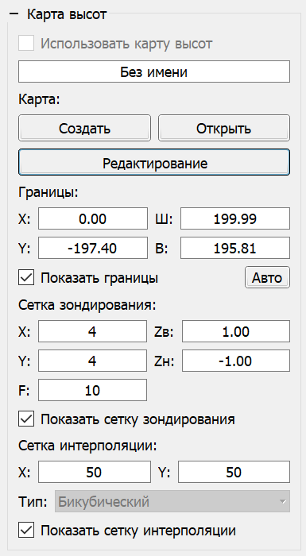

Панель "Карта высот" отвечает за создание, загрузку, снятие карты неровности поверхности и дальнейшую коррекцию УП для нивелирования кривизны детали, обрабатываемой с помощью ЧПУ. Данная функция полезна при фрезеровке печатных плат и гравировке.
На панели имеются элементы создания, загрузки и включения режима работы с картой высот; задания границ прямоугольной зоны карты; установки количества точек зондирования по осям X и Y; установки точки отсчёта; установки рабочей высоты над поверхностью и глубины зондирования; установки скорости подачи; установки количества линий сетки разбиения УП по осям X и Y.
Коррекция УП по активной карте высот производится включением флага "Использовать карту высот".
Более подробная информация об использовании карты высот приведена в разделе "Создание карты высот" данного руководства.